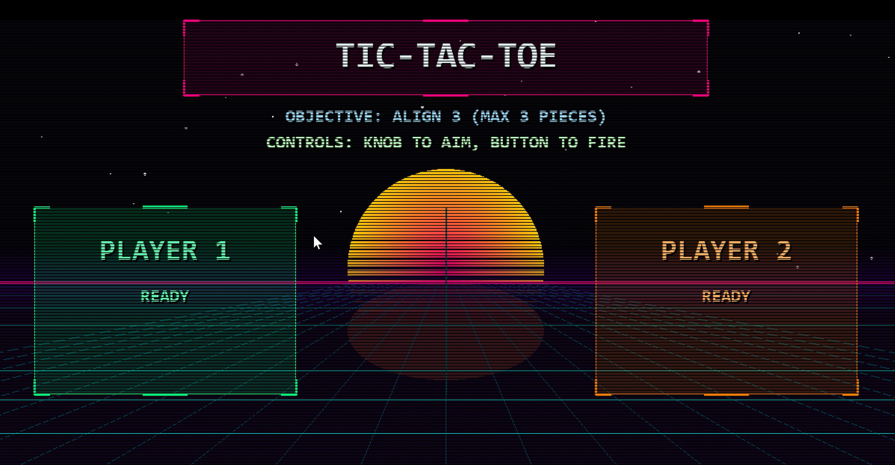
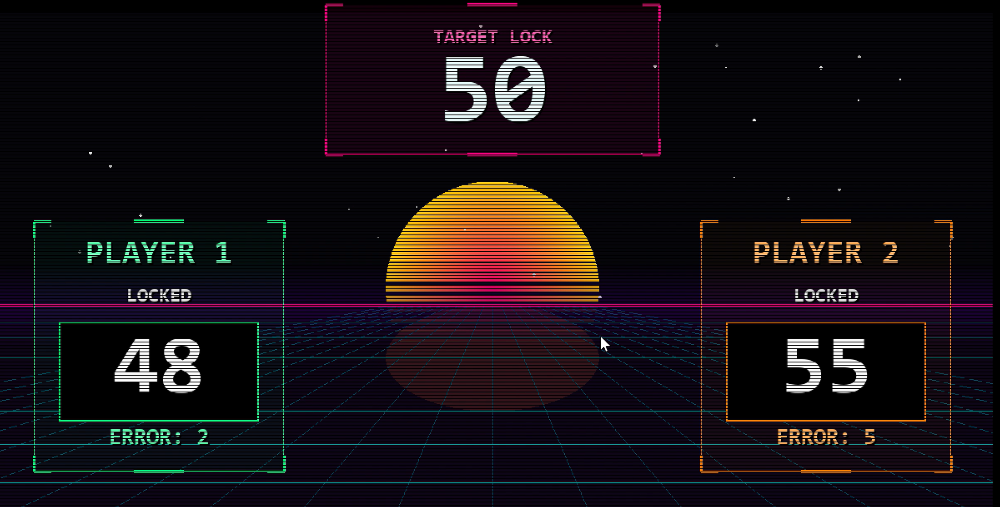
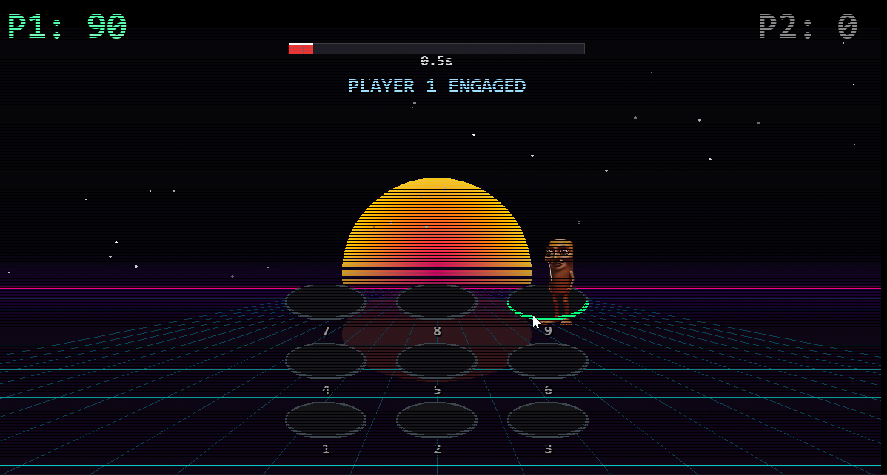

PROJECT CASE STUDY
PIC18F Interactive Gaming System Microcontroller Final Project
A complete real-time gaming platform co-designed across embedded firmware (PIC18F4520) and PC host software (Python + Pygame), synchronized through a custom UART communication protocol.
System Architecture
The system follows a clear hardware-software split: PIC18F4520 is the real-time decision core, while the PC host acts as a visualization and audio layer.
- Firmware side (PIC18F): Nested interrupt handling, peripheral control (ADC, Timer, External Interrupts, UART), and FSM-driven game logic.
- Host side (PC): Multithreaded producer-consumer design to decouple serial I/O from rendering and maintain smooth 60 FPS display updates.
- Design principle: PIC is the game brain. PC does passive rendering only, with no authority over win/loss rules.
UART Protocol Design
To guarantee robust state synchronization, the project uses a custom ASCII packet protocol instead of simple one-byte signaling.
- Physical layer: UART, 9600 bps
- Packet frame:
$<HEADER>,<DATA...>* - Delimiters: start
$, end*, separator, - Message groups:
$HINT,$TTT,$REACT,$WAM,$END - Reliability: UART overrun recovery via
OERRdetection andCRENreset logic
Detailed protocol documentation: Docs/Protocol.md
Game Modes and Runtime Logic
-
Tic-Tac-Toe
VR input (ADC) controls cursor selection; button confirms placement.
PIC computes board updates, win/loss, and draw conditions.
-
Reaction Game
Two players stop a rapidly changing counter near a target value.
PIC evaluates lock timing and scoring precision.
-
Whac-A-Mole
Players initialize via buttons; host keyboard events are sent over UART.
PIC handles hit detection, countdown timing, and score updates.
Gameplay Screens



Embedded Engineering Highlights
- Interrupt priority mode enabled with high/low ISR split for responsiveness.
- External interrupts (INT0/INT1) for low-latency button input over polling.
- Software debouncing strategy tuned to avoid unnecessary gameplay latency.
- Timer2-driven time base for reaction timing and countdown control.
- Global shared tables (for example, GC_TABLE and WAWO_TABLE) for ISR-main data exchange.
My Contribution
- UART Packet Protocol Design: Defined packet framing, headers, and synchronization rules for game-state broadcasting.
- UART Driver Development: Implemented communication handling and stability mechanisms in firmware runtime.
- Pygame UI Implementation: Built host-side interface behavior and rendering logic for responsive gameplay presentation.